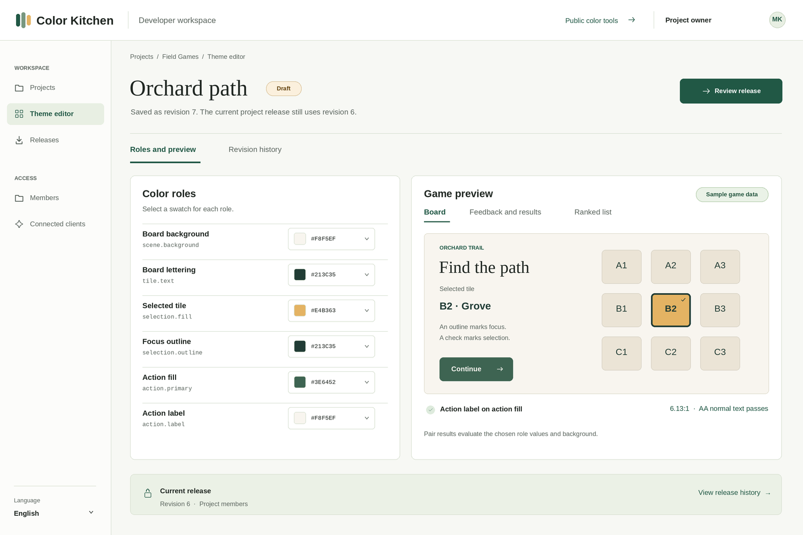
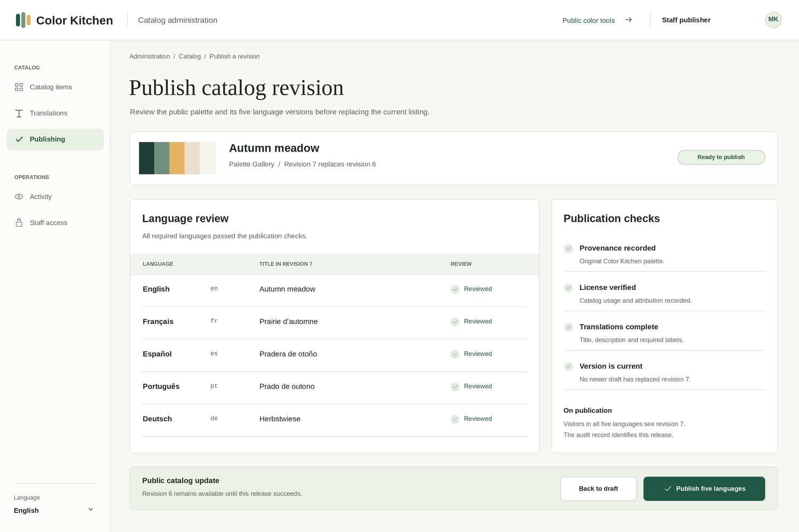
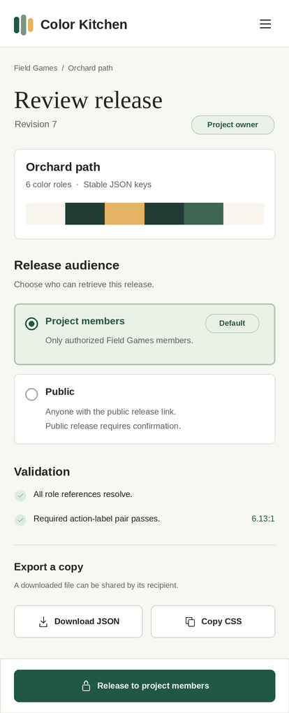
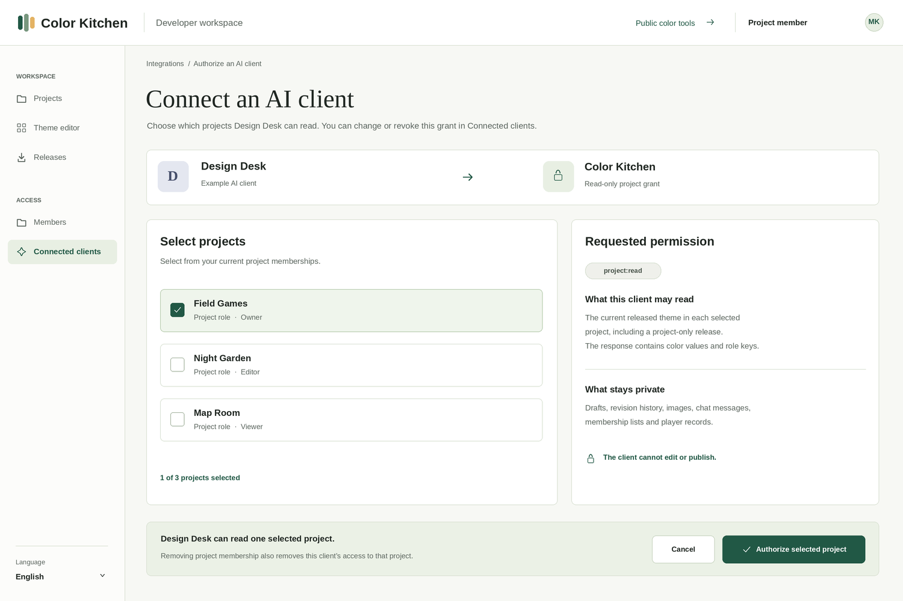

A project owner maps six game interface roles and checks the selected tile and action label against a clearly labelled sample board. Committed revision 7 remains private until an owner chooses its release audience.

A staff publisher reviews English, French, Spanish, Portuguese and German in the same release, together with provenance and version checks. Publication changes the public catalog and records the action.

The release audience defaults to project members. An owner must deliberately select and confirm public access. Download and copy actions produce independent copies. The final release action names the selected audience.

This example selects one project for an external client. Each protected request identifies a theme asset within a selected project and reads its current release. The server checks current membership and grant status on every call.
